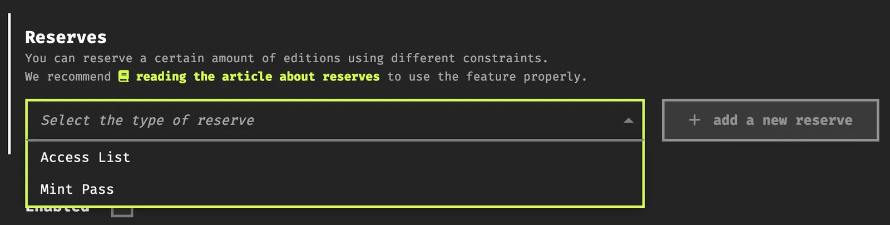
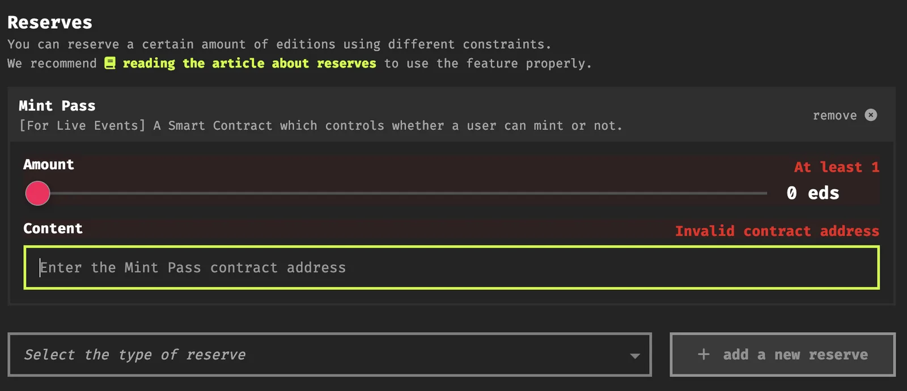
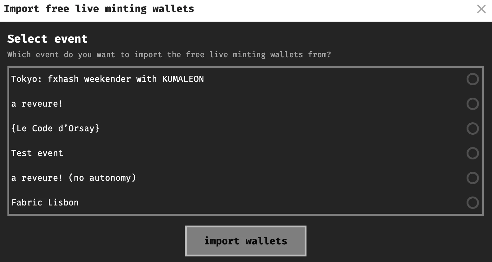
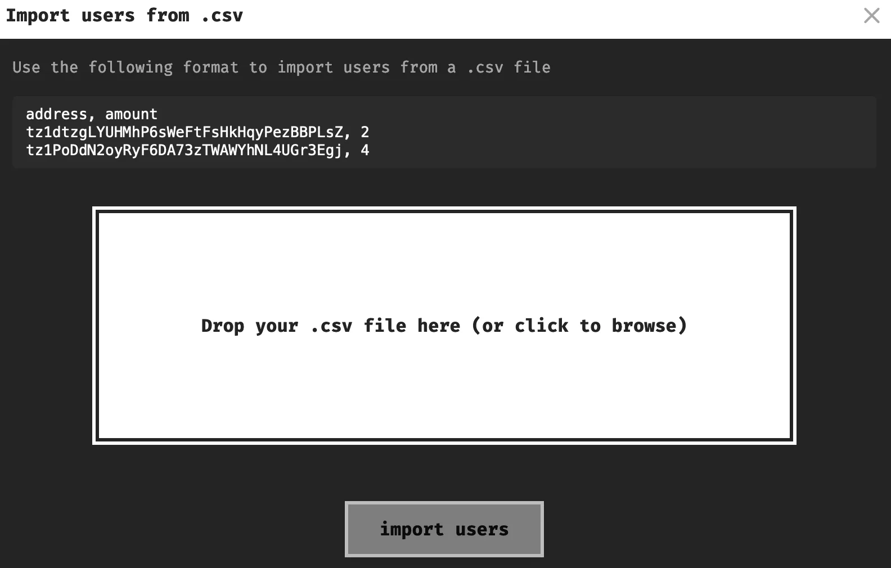
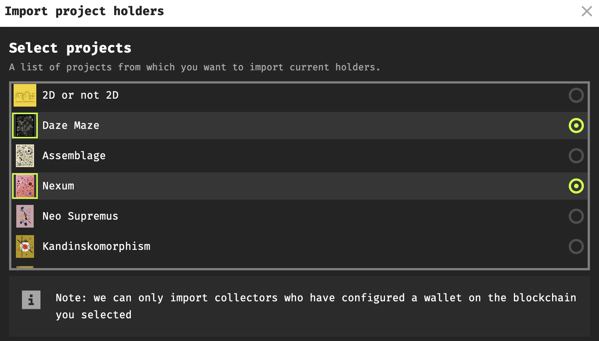
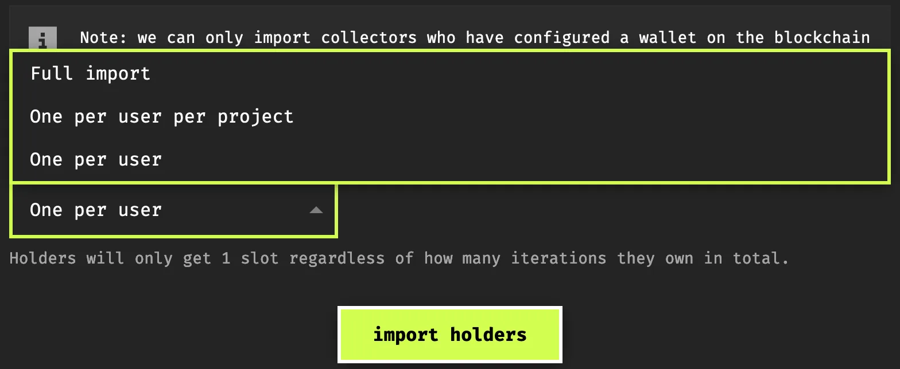
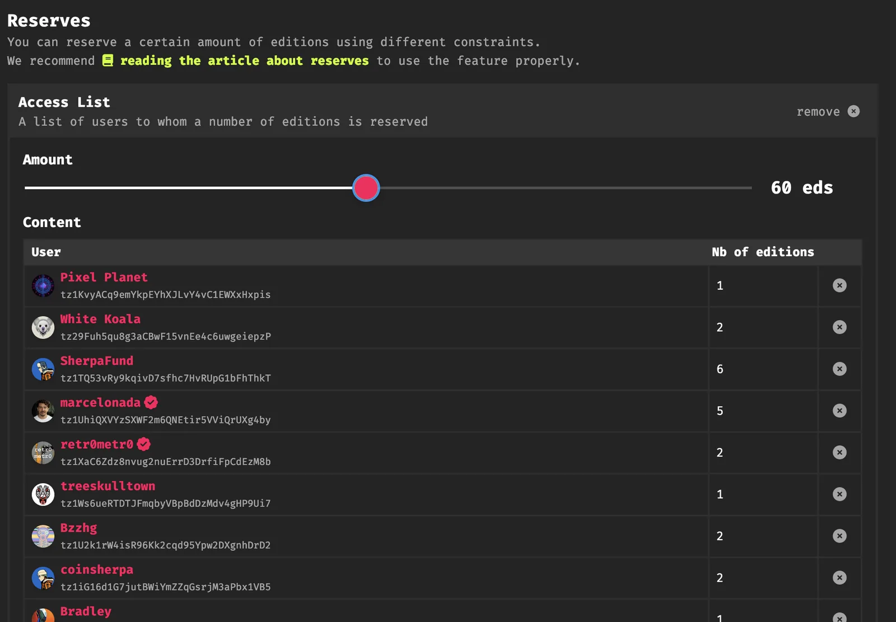
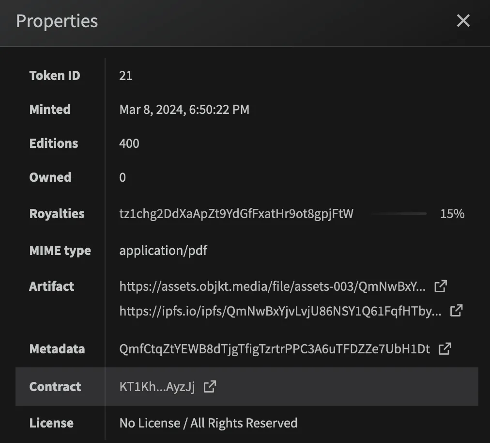
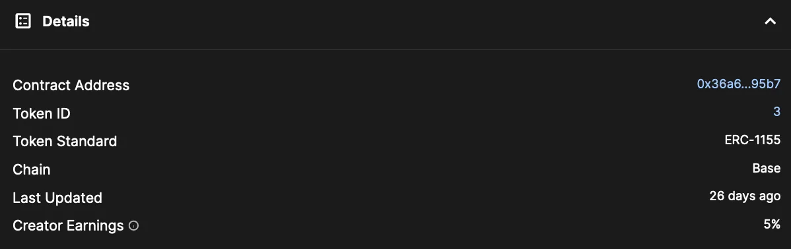
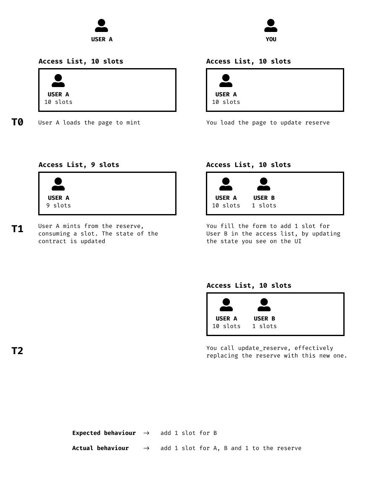

Reserves & Allow Lists
This section provides an overview of how to configure reserves and allow lists for your fxhash projects, if you want an over view of what they are, we recommend checking out the overview in the Allow Lists in the Collector docs.
Reserves can be configured in the 8th step of the minting interface (distribution):

Currently there are two types of reserves that can be toggled on a project:
- Access/Allow Lists: A list of wallet addresses that have exclusive access to a number of reserved editions/iterations of the generative project.
- Mints Passes (Token Gates): Holders/Owners of a specific token obtain exclusive access to a number of reserved editions/iterations of the generative project.
We will tackle these two methods in what follows.
Adding Access Lists#
When selecting an access list as a reserve we see the following in the UI:

Before we have a look at the slider, we’ll have to create a list of addresses that will comprise the access list. We can either enter these addresses manually by copy pasting them in and hitting the ‘add’ button, or we can import an entire list at once. And there’s three options for this:
Import from Event#
Essentially imports all wallet addresses that participated in a live mint at a specific IRL event:

Importing from a CSV file#
many other NFT/crypto platforms, as well as 3rd party tools allow you to export a list of wallet addresses, this could be a list of all holders of a specific token on another platform for example. It might be that you want to reward these collectors by reserving some editions of your project on fxhash for them. Here you can simply import this csv list and fxhash will parse it for you filling in the list:

Make sure to format this list properly though, where each address is followed by a semicolon, a space, and non-negative non-zero integer.
address;amount
tz1dtzgLYUHMhP6sWeFtFsHkHqyPezBBPLsZ;2
tz1PoDdN2oyRyF6DA73zTWAWYhNL4UGr3Egj;4
tz1MGzgRu6qJ3RaBUErnpFDLarFVPgaApKrA;1Import addresses of current holders of previous projects#
It might also be the case that you want to reward edition holders of your previous fxhash projects, the third option lets you do this, there’s some nuance to this import option however. In this pop-up box you can select the projects for which you’d like to import the addresses of the current holders. You can select one, or several:

After that you need to select an import strategy, this determines how many reserve slots each holder will obtain:

- One Per User: each imported address obtains 1 access list slot regardless of how many iterations they own in total from the same project or across the multiple projects that you’ve selected to import from.
- One per User per Project: imported addresses will have as many slots as projects for which they hold at least one iteration. This limits the number of slots to 1 even if a user holds 10 iterations of the same project. If you only import the holders of one project each address on the access list will have 1 slot.
- Full Import: imported addresses will have as many slots as the total number of iterations they own across all of the projects that you import. If you import two projects for example, and one address holds 5 editions of the first project, and 3 editions of the second project, then they would get 8 reserve slots in total.
Once you import the addresses you also need to adjust the slider that indicates how many editions the reserve will cover - for this you need to have set the total amount of editions earlier:

Naturally, you can still manually edit the amount of slots each imported address will obtain on the reserve.
💡 **Open editions and Reserves:** When creating an open edition, it is not possible to create a reserve, since there is an unlimited supply for the project.
Adding a Mint Pass#
We’ve already established that smart contracts are self-executing pieces of code on the blockchain, that users can interact with to do all sorts of things - for example it’s the tech that enables artists to create NFTs, and in turn also enables collectors to purchase NFTs. And all of that in a decentralized manner without the need of an intermediary. These interactions are usually facilitated by the interfaces of the different platforms.
Because smart contracts are stored on the blockchain, they require a unique identifiable address - we generally refer to this address as a contract address:
💡 **Contract Address**
A unique identifier on a blockchain network that acts as the location of a smart contract. It's a string of alphanumeric characters that allows users and other smart contracts to interact with it. Think of it like the digital mailbox address of a self-executing contract.
NFT Platforms leverage this unique smart contract identifier to make Mint Passes possible. Although we generally describe a Mint Pass as a sort of voucher token that grants access to a certain gated Web3 service - such as minting rights for another NFT, or viewing rights for a piece of content - the token gate check is effectuated via the contract address that this Mint Pass Token is created under.
💡 **Mint Pass / Token Gate**
A specific type of NFT (or sometimes a social token) that grants holders exclusive access to mint (create) other NFTs during a designated minting event or within a specific collection. Mint passes are a form of token gating.
We do this instead of checking the individual NFT addresses, for a few main reasons:
- One Verification: Rather than verifying a whole list of individual (yet-to-be-minted) NFT addresses, using the main contract address allows the minting system to efficiently confirm if someone holds a legitimate mint pass with a single check.
- Collection-Wide Rights: several tokens can be minted under the same contract address, meaning that holders of any of the tokens under that contract become eligible for the token gated services. Naturally the contract creators can limit this to a single token.
- Pre-Minting Mechanics: Mint passes are frequently used to grant early access or whitelist spots for minting (creating) NFTs that haven't been generated on the blockchain yet.
All of this said, adding a mint pass to one of your projects on fxhash is different from configuring an access list, as discussed, the contract address of a token needs to be specified when creating the reserve:

And to recap, if you want to reserve a number of editions for holders of a specific token, you need to insert the contract address under which this token has been minted - in this manner, any NFT can essentially be a mint pass, as long as it is minted under its own unique contract!
Many NFT platforms out there provide a functionality that lets you create your own contract, under which you can then mint NFTs. On Tezos for instance, collections on Objkt.com each have their own unique contract, similarly a platform like Manifold.xyz is entirely geared towards this purpose, acting as a sort of contract factory for different types of Ethereum contracts.
Where do you find the contract address of a token?
-
On Tezos: When inspecting an NFT on Objkt.com you can find the contract address under the properties tab. This opens the contract address on tzkt.io from where you can copy it.

-
On Eth: The best place for Ethereum is Opensea, that also covers the other Ethereum L2 Networks - here you’ll find the contract address under the details tab. This will then navigate you to Ethscan/Basescan.

And that’s all there is to it, simple paste the contract address into the input field of the reserve, and adjust the slider to specify the size of the reserve - this grants one reserve slot for each mint pass holder.
Use cases#
Here are some of the scenarios in which it makes sense to set reserves on your projects:
-
Reserving Editions for yourself / Artist Proofs: Create a separate reserve of type
Access List, give it the number of slots you'd like to reserve for yourself, and add your own wallet address in the access list with the same number of slots. You will be guaranteed to be able to mint the same number of editions whenever you'd like.💡 Previously projects needed to be launched in a disabled state for the artist to mint from them prior to a public release. This is no longer the case, and artists can set reserves for themselves.
-
Rewarding your collector base: It is nice to show appreciation towards your past collectors and provide them with reserve slots. As discussed earlier, the fxhash UI facilitates this in that wallet addresses of previous project holders can be easily imported. Other tools exist however to import the addresses of holders of tokens on other platforms as well.
💡 Please keep in mind that reserves are not dynamic. Future collectors won't be included in a previously created reserve.
-
Locking N editions for later: By setting a reserve as an access list to a burn address (or to yourself if you're not planning on consuming it), you can lock a certain number of editions which can then be safely unlocked. This can be useful if you want to do raffles and/or giveaways in the future.
We would recommend to also keep new collectors in mind however, while it's great to reward your previous collectors, we wouldn't want the platform to become locked to new-comers because of this feature.
💡 **Access Lists are currently limited to 1000 addresses per list**.
Updating Reserves#
Reserves are static. When a user mints from a reserve, it updates the smart contract storage, which then has to be indexed to be displayed on the UI with the update. It means that what you see on the UI may not be completely up-to-date with on-chain storage.
Consider the following case:

From the contract's perspective, the following happens:
- Reserve: 10 (User A: 10)
- User A mints from reserve
- Reserve: 9 (User A: 9)
- User A: get NFT
- Author updates reserve
- Reserve: 10 (User A: 10, User B: 1)
This is known as a race condition, and measures must be taken to prevent those cases from happening. That's why the Smart Contract will reject update_reserve calls if token are not disabled. When updating a reserve, we suggest following these steps:
- disable the token
- wait until the UI displays your token as disabled (refresh page)
- update the reserve
- enable the token
These steps will ensure that no race condition can happen between the UI state and the contract storage.